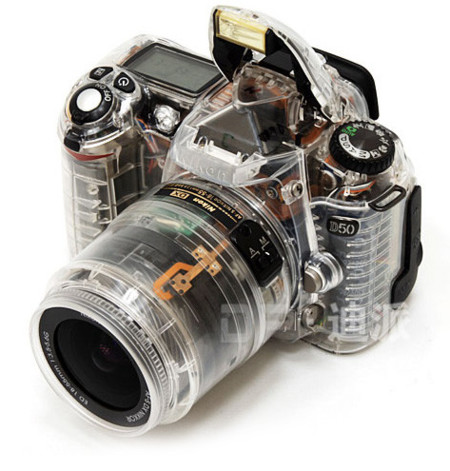

¿Que es una camara reflex digital?
Una cámara réflex digital, o también llamada DSRL (Digital Single Lens Reflex) debe su nombre a dos características fundamentales:
1. Visor Réflex: Lo cual significa, que cuando miramos a través del visor, vemos, sin ningún tipo de retardo, la escena. Esto se produce
gracias a un espejo colocado a 45º y un pentaprisma que conducen e invierten la imagen para que la veamos correctamente a través del visor.
Las ventajas del visor réflex, son muchas, y las sensaciones, también, pero las veremos más adelante junto con las otras muchas partes de la
cámara en una réflex, que le dan un carácter único.
2. Un sensor de imagen: El material fotosensible, que en las cámaras analógicas era el negativo, en las cámaras digitales se transforma en un sensor
digital compuesto por píxeles. Normalmente estos sensores son del tipo CCD (Charged-Coupled Device) o CMOS (Complementary Metal-Oxide Semiconductor)
y son los que se encargarán de retener la imagen.
Estos sensores tienen una resolución en función del número de píxeles: los famosos y tan erróneamente bien valorados Megapixeles de las cámaras digitales,
que aunque nos los vendan así NO son los que dan la calidad a una imagen, simplemente miden su tamaño.
Evidentemente, al ser un solo sensor digital lo que retiene la imagen, una vez capturada, esta debe transformarse en un archivo digital,
de ahí que las cámaras digitales dispongan de zócalos donde mediante tarjetas de memoria, vamos almacenando las fotografías.
Esto tiene una ventaja añadida, el poder ver las imágenes inmediatamente después de haberlas tomado mediante una pantalla LCD,
que incorporan todas las cámaras digitales y otra de las características fundamentales de una cámara digital.
¿Y puedo hacer fotos a través de la pantalla? Pues aunque parezca mentira, hasta hace relativamente poco no, aunque desde que la arriesgada
Olympus E-330 lo incluyo entre sus características, muchos modelos y marcas lo han ido implementando con el tiempo, hasta el punto de que la
mayoría de las cámaras réflex actuales lo permiten, quitando contadas excepciones.
Aparte de estas dos características básicas, otra característica fundamental de las réflex digitales es la posibilidad de intercambiar los objetivos
con lo cual las posibilidades fotográficas se multiplican de sobremanera, aunque ya veremos más detalladamente como influye cada tipo de objetivo sobre
la escena que queramos fotografiar.
Por cierto, un último apunte, las cámaras réflex digitales NO graban vídeo como las compactas, al menos de momento.
top 10 camaras fotograficas profesionales
| Nombre |
Marca |
Precio |
| CANON EOS 4000D |
CANON |
400 EUR |
| NIKON D3500 |
NIKON |
600 EUR |
| CANON EOS 90D |
CANON |
1100 EUR |
| NIKON D5600 |
NIKON |
900 EUR |
| CANON EOS 2000D |
CANON |
500 EUR |
| PENTAX K-70 |
PENTAX |
1200 EUR |
| SONY A6000 |
SONY |
1000 EUR |
| CANON EOS 250D |
CANON |
900 EUR |
| CANON EOS 850D |
CANON |
1400 EUR |
| NIKON D7500 |
NIKON |
1100 EUR |